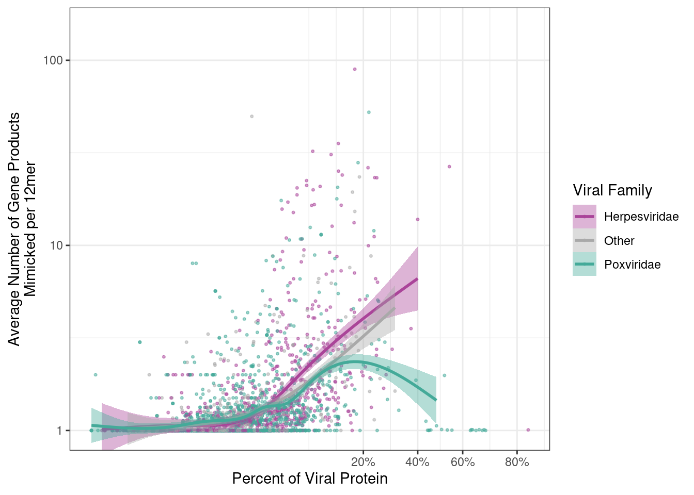

library(tidyverse)
library(readr)
library(data.table)
library(ggpubr)
library(ggbeeswarm)
library(seqinr)
library(stringi)
library(svMisc)
library(scales)
meta_path <- "../../Metadata/"
metadata <- openxlsx::read.xlsx(paste0(meta_path, "Final_Cohort_Metadata_v5.xlsx"), sheet = 1)
human_duplicated_proteins <- read_csv(paste0(meta_path, "human_duplicated_or_removed_proteins.csv")) %>%
dplyr::rename("uniprot" = 1)
duplicated_proteins <- read_csv(paste0(meta_path, "duplicated_proteins.csv"))
source("../../Utilities.R")
out_dir <- "../output/"Figure3_Final_v1
Figure 3
Multimapping 12mers
out_protein_final_count_12mer <- read.csv("../../Key_Data/12mer_proteome_protein_everything_count.csv", row.names = 1) %>%
mutate(viral_id = id_split(query_seqname))
gg12mer_multi_map <- out_protein_final_count_12mer %>%
mutate(count = cut(count, c(0,1,2,3,4,6,10,20,300))) %>%
group_by(Proteome.ID, mismatches, count) %>%
dplyr::summarize(total = n()) %>%
mutate(freq = total / sum(total)) %>%
left_join(metadata) %>%
mutate(Taxon.mnemonic = ifelse(Taxon.mnemonic == "null",
`Proteome.ID`, Taxon.mnemonic)) %>%
dplyr::rename("label" = "Taxon.mnemonic") %>%
mutate(mismatches = factor(mismatches, c("3", "2", "1", "0"))) %>%
ggplot(aes(x=freq, y=label, fill = count)) +
geom_bar(stat ="identity", position = "fill") +
theme_classic() +
facet_grid(cols = vars(mismatches)) +
xlab("Percent of 12mers (%)") +
theme(axis.title.y = element_blank()) +
viridis::scale_fill_viridis(discrete = TRUE,option = "F") +
scale_x_continuous(labels = scales::percent) +
theme(axis.text.y = element_text(size = 6),
axis.text.x = element_text(angle = 45, vjust = 1, hjust=1, size = 6,
color = "black"))+
theme(axis.text=element_text(colour="black"))`summarise()` has grouped output by 'Proteome.ID', 'mismatches'. You can
override using the `.groups` argument.
Joining with `by = join_by(Proteome.ID)`gg12mer_multi_map
gg12mer_family_multi_map <- out_protein_final_count_12mer %>%
mutate(count = cut(count, c(0,1,2,3,4,6,10,20,323))) %>%
group_by(Proteome.ID, count) %>%
dplyr::summarize(total = n()) %>%
mutate(freq = total / sum(total)) %>%
left_join(metadata) %>%
filter(Family_Viral_Zone %in% names(Family_palette_v2)) %>%
group_by(Family_Viral_Zone, count) %>%
dplyr::summarize(count_freq = mean(freq)) %>%
#filter(Family_Viral_Zone %in% names(Family_palette_v2)) %>%
ggplot(aes(x= Family_Viral_Zone,y=count_freq, fill = count)) +
geom_bar(stat ="identity", position = "fill") +
theme_classic() +
ylab("Percent of 12mers") +
theme(axis.text.x = element_text(angle = 45, vjust = 1, hjust=1, size = 8,
color = "black")) +
viridis::scale_fill_viridis(discrete = TRUE,option = "F") +
scale_y_continuous(labels = scales::percent) +
coord_flip() +
ylab("Percent of 12mers") +
theme(axis.title.y = element_blank(),
axis.text.x = element_text(angle = 45, vjust = 1, hjust=1, size = 6,
color = "black"))+
theme(axis.text=element_text(colour="black"))`summarise()` has grouped output by 'Proteome.ID'. You can override using the
`.groups` argument.
Joining with `by = join_by(Proteome.ID)`
`summarise()` has grouped output by 'Family_Viral_Zone'. You can override using
the `.groups` argument.gg12mer_family_multi_map12mer Run Calling
setwd("../../12mer_annotated/")
Sys.time()
files_to_read <- list.files()
files_to_read <- files_to_read[grepl(".csv.gz", files_to_read)]
run_identifier <- function(x){
runs <- split(seq_along(x), cumsum(c(0, diff(x) > 1)))
position <- setNames(unlist(runs, use.names=F),rep(names(runs), lengths(runs)))
out <- x[position]
names(out) <- names(position)
return(names(out))
}
files_to_read <- files_to_read[grepl(paste(metadata$Proteome.ID[metadata$superkingdom == "Viruses"], collapse = "|"), files_to_read)]
run_calls_df <- data.frame()
for(active_file in files_to_read){
print(paste0("Starting ", active_file, " Pathogen number:",match(active_file, files_to_read), "/", length(files_to_read)))
active_data <- fread(active_file, nThread = 18) %>% as.data.frame()
if(nrow(active_data) == 0){
next
}
active_data <- active_data %>%
## Remove duplicated pathogen proteins identified in
## ../../Scripts/Duplicate_Protein_Screen.R
filter(!viral_id %in% duplicated_proteins$viral_uniprot) %>%
filter(!uniprot %in% human_duplicated_proteins$uniprot) %>%
dplyr::select(query, query_seqname, query_start, target_seqname, mismatches, reaction.human,
reaction.viral, reaction.same, catalytic_activity.same,
ec_number.human, ec_number.viral,
enzyme_number.same)
active_data$reaction.same[is.na(active_data$reaction.same)] <- FALSE
active_data$catalytic_activity.same[is.na(active_data$catalytic_activity.same)] <- FALSE
active_data <- as.data.frame(active_data)
active_data <- active_data %>%
filter(reaction.same != TRUE & catalytic_activity.same != TRUE) %>%
filter(enzyme_number.same != TRUE) %>%
distinct(query, query_seqname, query_start, target_seqname, mismatches)
run_calls <- active_data %>%
group_by(query_seqname, target_seqname) %>%
mutate(run = run_identifier(query_start)) %>%
mutate(Proteome.ID = gsub("_12mer.*", "", gsub(".*_UP", "UP", active_file)))
run_calls_df <- rbind.data.frame(run_calls_df, run_calls)
}
write.csv(run_calls_df, "../Figure3/output/12mer_run_calls_2024.csv")run_calls_df <- read.csv(paste0(out_dir, "12mer_run_calls_2024.csv"))
run_call_gg <- run_calls_df %>%
group_by(Proteome.ID, query_seqname, target_seqname, run) %>%
dplyr::summarize(count = n()) %>% ungroup() %>%
mutate(count = count +11) %>%
mutate(count = cut(count, c(11, 12,13,14,15, 16,20, 30, 90))) %>%
group_by(Proteome.ID, count) %>%
dplyr::summarize(total_count = n()) %>%
group_by(Proteome.ID) %>%
mutate(count_freq = total_count / sum(total_count) * 100) %>%
left_join(metadata) %>%
mutate(Taxon.mnemonic = ifelse(Taxon.mnemonic == "null",
`Proteome.ID`, Taxon.mnemonic)) %>%
dplyr::rename("label" = "Taxon.mnemonic") %>%
ggplot(aes(x=count_freq,y=label, fill = count)) +
geom_bar(stat ="identity", position = "fill") +
theme_classic() +
xlab("Percent of Runs (%)") +
theme(axis.title.y = element_blank()) +
viridis::scale_fill_viridis(discrete = TRUE,option = "G") + ## C, E, F, G
scale_x_continuous(labels = scales::percent) +
theme(axis.text.y = element_text(size = 6),
axis.text.x = element_text(angle = 45, vjust = 1, hjust=1, size = 6,
color = "black")) +
theme(axis.text=element_text(colour="black"))`summarise()` has grouped output by 'Proteome.ID', 'query_seqname',
'target_seqname'. You can override using the `.groups` argument.
`summarise()` has grouped output by 'Proteome.ID'. You can override using the
`.groups` argument.
Joining with `by = join_by(Proteome.ID)`run_call_gg
run_call_family_gg <- run_calls_df %>%
group_by(Proteome.ID, query_seqname, target_seqname, run) %>%
dplyr::summarize(count = n()) %>% ungroup() %>%
mutate(count = count +11) %>%
mutate(count = cut(count, c(11, 12,13,14,15, 16,20, 30, 90))) %>%
group_by(Proteome.ID, count) %>%
dplyr::summarize(total_count = n()) %>%
group_by(Proteome.ID) %>%
mutate(count_freq = total_count / sum(total_count) * 100) %>%
left_join(metadata) %>%
filter(Family_Viral_Zone %in% names(Family_palette_v2)) %>%
group_by(Family_Viral_Zone, count) %>%
dplyr::summarize(count_freq = mean(count_freq)) %>%
ggplot(aes(x= Family_Viral_Zone,y=count_freq, fill = count)) +
geom_bar(stat ="identity", position = "fill") +
theme_classic() +
ylab("Percent of Runs") +
theme(axis.text.x = element_text(angle = 45, vjust = 1, hjust=1, size = 8,
color = "black"),
axis.title.y = element_blank()) +
viridis::scale_fill_viridis(discrete = TRUE,option = "G") +
scale_y_continuous(labels = scales::percent) +
coord_flip() +
theme(axis.text=element_text(colour="black"))`summarise()` has grouped output by 'Proteome.ID', 'query_seqname',
'target_seqname'. You can override using the `.groups` argument.
`summarise()` has grouped output by 'Proteome.ID'. You can override using the
`.groups` argument.
Joining with `by = join_by(Proteome.ID)`
`summarise()` has grouped output by 'Family_Viral_Zone'. You can override using
the `.groups` argument.run_call_family_gg
Final Panel Assembly
Main Panels B-C
ggarrange(run_call_family_gg+
coord_flip()+
scale_x_discrete(limits=rev),
gg12mer_family_multi_map+
coord_flip()+
scale_x_discrete(limits=rev),
nrow = 1, ncol = 2, align = "hv")Coordinate system already present. Adding new coordinate system, which will
replace the existing one.
Coordinate system already present. Adding new coordinate system, which will
replace the existing one.ggsave(paste0(out_dir, "Figure3B-D.pdf"), width = 9, height = 5)Main Panel E
out_protein_final_count_12mer <- read.csv("../../Key_Data/12mer_proteome_protein_everything_count.csv", row.names = 1) %>%
mutate(viral_id = id_split(query_seqname))
percent_of_protein_df <- out_protein_final_count_12mer %>%
distinct(query_seqname, viral_id, query_start) %>%
group_by(query_seqname, viral_id) %>%
dplyr::summarize(number_of_12mers = n()) %>%
left_join(out_protein_final_count_12mer %>% distinct(query_seqname, viral_id, PLength, Proteome.ID)) %>%
mutate(percent_of_protein = number_of_12mers / (PLength-11) * 100)`summarise()` has grouped output by 'query_seqname'. You can override using the
`.groups` argument.
Joining with `by = join_by(query_seqname, viral_id)`out_protein_final_count_12mer %>%
group_by(viral_id, mismatches) %>%
filter(mismatches == 3) %>%
dplyr::summarize(mean = mean(count)) %>%
left_join(percent_of_protein_df) %>%
left_join(metadata) %>%
mutate(smooth_curve = ifelse(Family_Viral_Zone %in% c("Herpesviridae", "Poxviridae"), Family_Viral_Zone, "Other")) %>%
ggplot(aes(x=percent_of_protein, y= (mean))) +
geom_point(aes(color = smooth_curve), alpha = 0.5, size = 0.6) +
geom_smooth(aes(fill = smooth_curve, group= smooth_curve, color = smooth_curve), method = "gam") +
theme_bw() +
scale_color_manual(values = c(Family_palette_v2[c(5,9)], "Other" = "darkgray"), name = "Viral Family") +
scale_fill_manual(values = c(Family_palette_v2[c(5,9)], "Other" = "darkgray"), name = "Viral Family") +
xlab("Percent of Viral Protein") +
ylab("Average Number of Gene Products\nMimicked per 12mer") +
coord_cartesian(ylim = c(1, 150)) +
scale_y_continuous(trans='sqrt')`summarise()` has grouped output by 'viral_id'. You can override using the
`.groups` argument.
Joining with `by = join_by(viral_id)`
Joining with `by = join_by(Proteome.ID)`
`geom_smooth()` using formula = 'y ~ s(x, bs = "cs")'
ggsave(paste0(out_dir, "Figure3E.pdf"), width = 6, height = 4)`geom_smooth()` using formula = 'y ~ s(x, bs = "cs")'Supplemental Figure Material
Supplemental Figure 3
library(treeio)
library(ggtree)
library(ade4)
library(aplot)
taxa <- metadata %>% as.data.frame() %>%
mutate(Taxon.mnemonic = ifelse(is.na(Taxon.mnemonic),
"Simian virus 5", Taxon.mnemonic)) %>%
mutate(Taxon.mnemonic = ifelse(Taxon.mnemonic == "null",
`Proteome.ID`, Taxon.mnemonic)) %>%
filter(Proteome.ID %in% out_protein_final_count_12mer$`Proteome.ID`) %>%
column_to_rownames("Taxon.mnemonic") %>%
dplyr::select(family, order, class, phylum, kingdom) %>%
as.data.frame()
taxa[taxa$family == "Anelloviridae",] <- "Anelloviridae"
taxa[taxa$family == "Kolmioviridae",] <- "Kolmioviridae"
check <- as.data.frame(lapply(taxa, as.factor), stringsAsFactors =TRUE)
rownames(check) <- rownames(taxa)
check <- check[complete.cases(check),]
tmp <- taxo2phylog(as.taxo(check), root="Root", abbrev=F)
tax.phy <- as.phylo(tmp)
gg_tree <- ggtree(tax.phy, branch.length='none')
gg_tree
gg_tree[["data"]] <- gg_tree[["data"]] %>%
left_join(metadata %>%
mutate(Taxon.mnemonic = ifelse(is.na(Taxon.mnemonic),
"Simian virus 5", Taxon.mnemonic)) %>%
mutate(Taxon.mnemonic = ifelse(Taxon.mnemonic == "null",
`Proteome.ID`, Taxon.mnemonic)) %>%
dplyr::select(Taxon.mnemonic, family), by = c("label" = "Taxon.mnemonic"))
gg_tree <- gg_tree + geom_hilight(mapping=aes(subset = family %in% names(Family_palette_v2),fill = family), alpha = 0.8) +
scale_fill_manual(values = Family_palette_v2)
run_call_gg %>%
insert_right(gg12mer_multi_map, width = 4.5) %>%
insert_left(gg_tree, width = 0.7)
ggsave(paste0(out_dir, "FigureS3.pdf"), width = 8, height = 15)